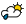

Klimatogrammen
Het KMI publiceerde gisteren de laatste nieuwe klimaatgegevens voor ons land, waarvan we hier de gegevens voor Oostende en St-Hubert overnemen. Wat opvalt is de langzame stijging van de langjarig gemiddelden.
| Gemiddelde klimaatgegevens 2011 |
| Klimatogram voor Oostende |
|
Jan |
Feb |
Maa |
Apr |
Mei |
Jun |
Jul |
Aug |
Sep |
Okt |
Nov |
Dec |
| Max. temperatuur in °C |
4 |
6 |
8 |
11 |
15 |
18 |
19 |
19 |
19 |
15 |
10 |
6 |
| Min. temperatuur in °C |
1 |
1 |
2 |
5 |
8 |
11 |
13 |
13 |
11 |
8 |
4 |
2 |
| Neerslag in mm |
52 |
44 |
28 |
31 |
32 |
32 |
61 |
56 |
58 |
74 |
60 |
51 |
| Dagen met neerslag |
14 |
13 |
10 |
10 |
9 |
9 |
12 |
13 |
10 |
14 |
14 |
10 |
| Uren zon |
60 |
75 |
145 |
195 |
230 |
230 |
220 |
205 |
170 |
120 |
65 |
45 |
| © KMI |
| Klimatogram voor St.-Hubert |
|
Jan |
Feb |
Maa |
Apr |
Mei |
Jun |
Jul |
Aug |
Sep |
Okt |
Nov |
Dec |
| Max. temperatuur in °C |
1 |
4 |
6 |
10 |
14 |
18 |
18 |
18 |
17 |
11 |
6 |
2 |
| Min. temperatuur in °C |
-3 |
-1 |
0 |
2 |
5 |
8 |
10 |
9 |
8 |
5 |
1 |
-1 |
| Neerslag in mm |
95 |
84 |
65 |
83 |
88 |
97 |
113 |
121 |
80 |
75 |
93 |
109 |
| Dagen met neerslag |
20 |
18 |
19 |
19 |
18 |
15 |
18 |
18 |
15 |
17 |
20 |
20 |
| Uren zon |
51 |
82 |
122 |
155 |
192 |
205 |
204 |
176 |
156 |
95 |
57 |
43 |
B.Waarnemingen
Waarnemingen-16-1-2017 12:14:27
België
| Regio |
Plaats |
Weer |
Temp |
Wind |
Zicht |
Druk/trend |
Richting |
Snelheid |
Kust |
ZeeBrugge |
 |
11.1 |
°C |
SE |
6 | km |
20 | km |
999hPa, Stijgend |
| Oostende |
|
14.0 |
°C |
E |
14 | km |
30 | km |
998hPa, Stijgend |
| Vlaanderen |
Ukkel |

| 13.2 |
°C |
NNE |
7 |
kmu |
15 |
km |
992hPa,Stijgend |
| Hoog-Belgie
| Widuemont |

| 12.8 |
°C |
E |
6 |
kmu |
35 |
km |
1002hPa,Stijgend |